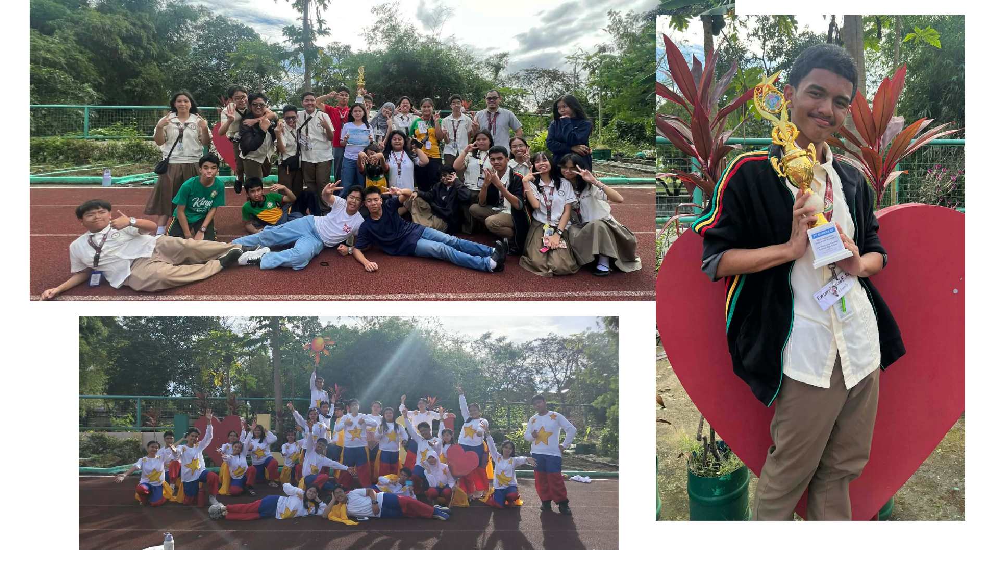
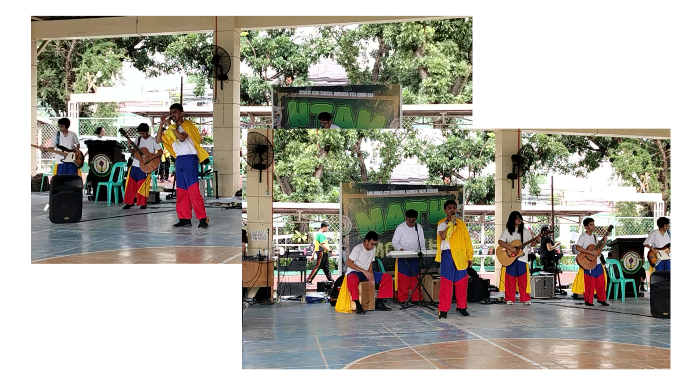

Outputs/Hands-on Activities and Events
3rd Quarter
Lessons Navbar!
(Now I DO know that they're supposed to be in separate webpages)
Event: V-Pop
Values Pop (3RD PLACE!!!!)
Now THIS event... WHOOOO BOOYYYY this was a doozy of an event for sure. Overall though, because of that, that made it so much more fun and memorable. People like to say that I was an important part in coming up with the song for this event to the point that they say that I was the one who wrote the entire thing, which I appriciate the praise, just isn't true. What I was able to learn from this event was taking initiative and grabbing this song from the original writers by the horns. Our original lyrics weren't good. They were wriing the lyrics before coming up with the tune, which no offense to them, is a one-in-a-million chnace of being actually successful. I saw this, and needed to come up with a way to intervene indirectly, which was by AI checking the original lyrics in tagalog, knowing they'd be flagged. This was my first step, getting myself into the lyric writting indirectly.
How I can apply this in real life is by knowing my limits, since I was FULL ON expecting going to have to rewrite everything, so I was very mentally prepared. I can't say that was entirely wrong, but entirely right either. Joy wrote the bridge, and I improved upon it. Yumi wrote one of the verses, and I improved upon that too. Edson was helping me come up with the beat with the beatbox we had, and I was so happy. I learned teamwork, and I even applied it here too. Everyone else from the choreographers and everyone else put in atleast someamount of effort for our final product. You can guess how the rest of our performance went since there's a video (rewatching it made me so happy) and you can see and relive it yourself.
If I were to try teaching what I learned here to someone else, I personally think it'd be impossible for me alone. Teamwork and learning how to cooperate with others, knowing how and where to strike even with objectively wrong and bad means with the least amount of negative effect, grabbing something by the horns and controlling it is hard to simulate and teach someone without having them experience it for themselves. Especially since it comes so naturally to me, I don't know how to explain it. The best teacher for this would be experience. Why this event is important, ofcourse outside of all of that, is promoting the values of that E.S.P. Month, and raising the strength and integrity of those values. While also promoting teamwork and cooperation within sections.
Credits to the Parents for the vid and pics!

Event: MVP
Most Valuable Person
What about MVP? This event, I have much less to say about since I can't really remember a whole lot about this since we were so focused on V-pop. What I CAN remember though is helping and getting stuff for Jim the day of the performance, so you can sorta say I learned being much more supportive and helpful in a way? That's the total extent I can say that I was able to experience. How I can apply this to real life is by simply supporting in someone without fueling harmful tendencies and other complexities that come that statement. I love supporting other people and making them feel good in what they're doing, so it's good that I learned and strengthend that value within me! If I were to try teaching this to someone else? I'd tell them to think really hard about the thing that makes them happiest,and imagine that feeling for someone else. Support that person because they're happy, because you know how it feels. This Event was important for each section in supporting eachother, and their representatives. Not only because they represent their section, but the values they represented aswell.
Credits to LPress for the videos and pics!


Event: Math Idol
Math Idol
Hey that's me! Yeah, I was the Math Idol for my section, and I have to say that it was one of the most mind-opening experiences I've had in a while to music and how bands work (besides 4th Quarter's Botb, but that's not 3rd Quarter.) What I was able to learn from here was about singing, and how to actually do it properlly. This is the only thing I can say I actually learned being new. I can apply this in my life by simply just using my voice more for singing andgoing outside of my comfort zone since this event and participating in something like this was really was something new for me to an extent. How I'd teach this to a friend is to tell them to go outside of their comfort zone to see if that fear is hiding something good or not, and to ALWAYS SING WITH YOU DIAPHRAGM. How this event is important though is because it gave me a chance to live out my rockstar dreams, even just for a little bit and in silly clothes (our vpop costumes.) It's more of a personal importance for me rather than an actual imprtance of the event, but the same can be said about Botb.
Credits to MY DAD FOR THE VIDEO!! And others for the pics!
